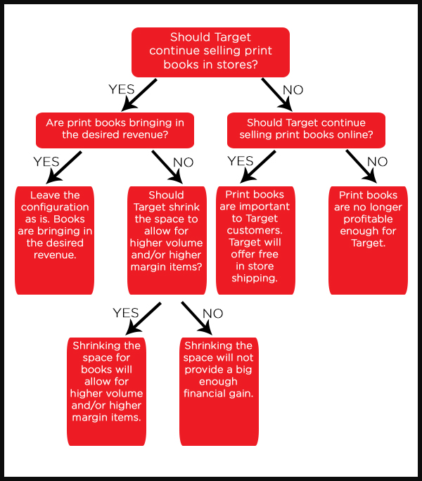

This sounds like a yes or no question. But is it? We often ask ourselves yes or no questions that immediately lock us into a framework. See Karma Neff’s post for how to frame your decision properly. Once we realize that yes or no questions are not really yes or no, we open ourselves up to a world of possibilities. But with so many possibilities, how do we narrow it down to make a good decision?
A decision tree is a great way for those of us who are visual to chart and see the options and the outcomes. What is a decision tree? It is a tree-like flow chart used to outline decisions and their outcomes, including chance event outcomes such as winning the lottery. A decision tree often includes probabilities, resource costs, and gains/losses for each final decision.
Back to our question, should Target continue to sell print books? Why ask this question? According to Nielsen Bookscan, the sales tracking system for books sold in the US, sales of print books at mass merchants, which includes Target, are down 10% in the first half of 2015 as compared to sales in the first half of 2014 (see table titled Unit Sales of Print Books by Channel). This decline is our change agent sparking the need to consider change.
Let’s take a look at some of our options on a decision tree. (Usually decision trees are laid out horizontally. For the purpose of this blog, I chose to give it a vertical layout for readability.)
If we worked for Target, we would be able to add in revenue numbers to help us make a rational decision based on expected values and not a decision based on emotion. Key numbers you would want to include are:
- Current print book revenue earned through in store sales.
- If Target shrunk the space by X%, what is the estimated revenue would they lose in print books and what is the estimated revenue they would gain by using the space to sell other items? The same numbers would be helpful if Target eliminated the print book department from stores completely.
- Current print book revenue earned through online sales.
- Cost savings through reduced item count in the warehouse if online print book sales were eliminated.
Since we don’t have the revenue numbers, we can’t really make a rational decision on this issue, but we can look at the options. So, should Target continue to sell print books?
If the answer is yes, how should Target continue to sell them?
- Keep the business model as is, selling print books online and in stores.
- Reduce item count in stores selling only the best of the best sellers.
- Remove print books from stores, but keep selling online.
If the answers is no, what opportunities could replace this section in the stores and online?
- More space for home video and tech.
- Explore e-books and either create their own e-reader, or partner with an existing e-reader. (This opportunity would be a whole new decision and require it’s own decision tree.)
If you have regularly visited a Target in the past few years, you may have noticed the shrinking book and music sections in favor of home video and tech products. Retailers are constantly looking at how to increase their profitability and often that comes at the expense of industries they currently serve. In the case of print books, the publishers most likely value their relationship with Target more than Target values their product. Mass merchants accounted for 16.7% of print book sales during the first have of 2015 (Nielsen Bookscan). This is certainly an important market for publishers. Let’s assume Target’s sales account for half of that 16.7% It is probably safe to say that book sales are not 8.4% of Target’s revenue. This gap will certainly be a challenge for publishers as they work with Target to avoid shrinking space or worse yet, the elimination of the entire category within Target stores.